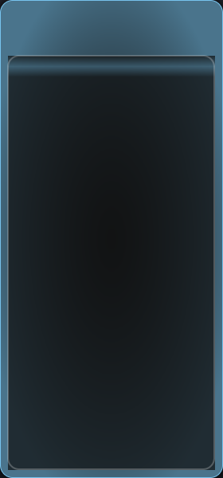
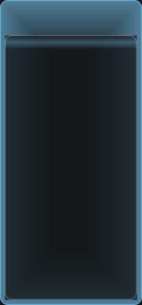
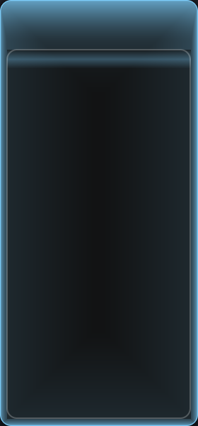
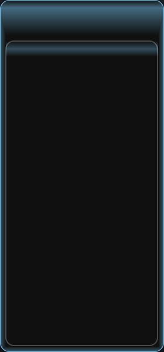

窗口尺寸 280×600，辉光色 (127, 209, 255)，圆角 16px。每组包含「峰值（a=1.0）」与「谷值（a=0.2）」两帧，便于判断呼吸动态范围。
方案 A · 径向渐变
中心→边缘 逐渐提亮

以窗口中心为圆心的椭圆径向渐变，内侧保持微光，边缘一圈达到高亮。
四周连续、无断层；但辉光覆盖卡片区，需要托盘半透明，存在重绘性能成本。
方案 B · 边缘均匀衰减
四边恒定高亮 · 中心不过暗

基于到最近窗口边的矩形距离场：四边亮度一致且高，向中心均匀衰减但仍保留底光。
同样需托盘半透明，性能影响与 A 相当。
方案 C · 扫描线式辉光
框形呼吸 + 整窗静态底光

呼吸部分仍严格限制在「窗口 − 托盘」的框形区域内（无额外性能开销）。
同时一次性烘焙一层覆盖整窗的静态底光，让中间不再纯黑、边缘与中心自然过渡。
方案 D · 当前实现（对照）
现状：四周黑 / 边缘亮 / 中间黑

顶部 60px 渐变带 + 左右/底部 10px 窄边 + 多层霓虹描边，托盘用不透明的窗底色覆盖。
因此呈现「框外一条亮边、中间大块死黑」的断层感。